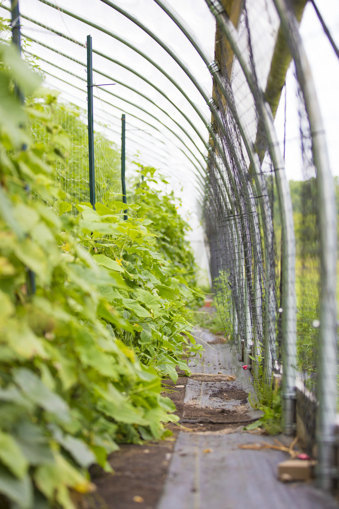
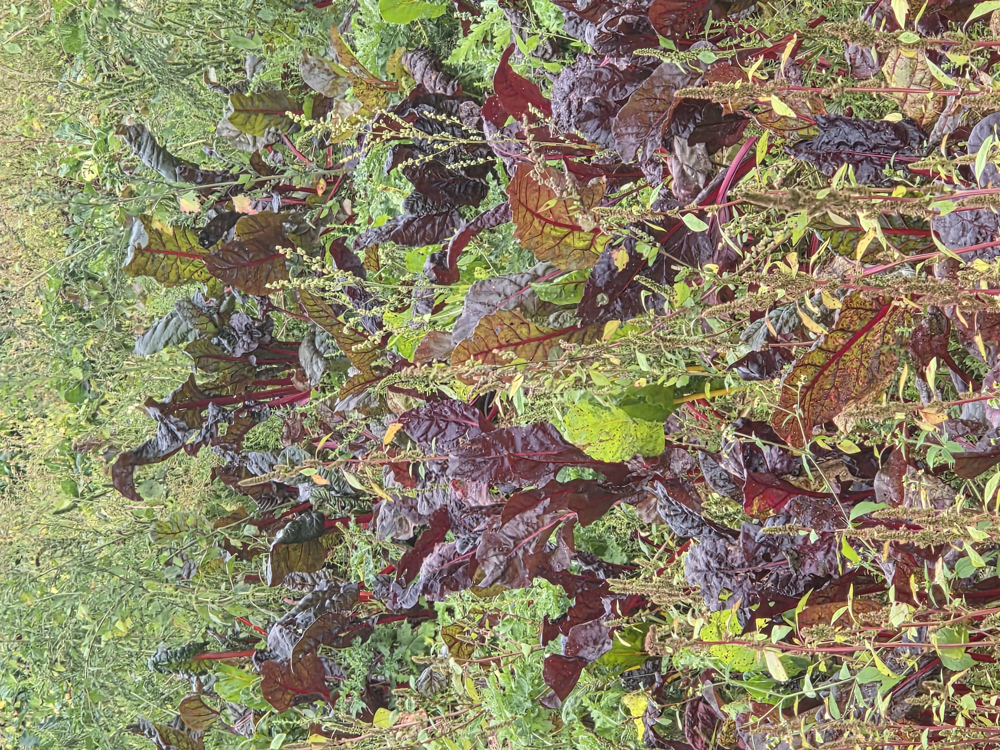
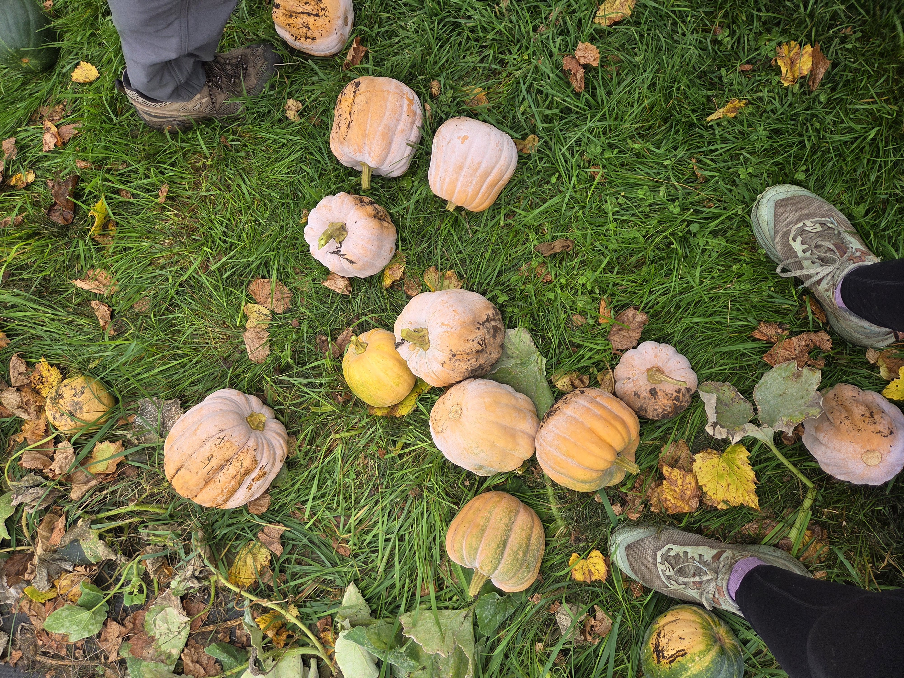

About the farm
Campus Farm Overview
The U-M Campus Farm is a learning community at the University of Michigan that fosters leadership development, inclusion, food justice, and carbon neutrality centered around food grown by students for students.

Portfolio Topics
Select a topic to visit its page.
Farm Overview & Ecological Systems
What is the Campus Farm? What does a farm as an ecosystem look like?
Organic & Other Certifications
What does organic really mean? How can farms get certified?
Food Safety, Harvest & Postharvest Handling
What does food safety look like at the Campus Farm?
Soils & Soil Management
How to manage soil on a farm?
Pest & Disease Management
How do organic farms manage pests and diseases?
Weed Management
How do organic farms manage weeds?
Irrigation
What does irrigation look like at the Campus Farm?
Crop Rotation & Cover Cropping
What is crop rotation and cover cropping? Why are they important?
Crop Planning, Sales, Pricing & Marketing
How do you decide which crops to plant, when to plant, and how many crops to plant?
Small Farm Business Management
How do you create a buisness plan for a small farm?
Season Extension
How can you extend growing seasons on a farm?

